Jongleerauspalloja voi tehdä hyvin monenlaisesta materiaalista. Jotkut täyttävät tennispalloja tai ilmapalloja, olenpa kuullut joidenkin käyttävän pallojen tekemiseen jopa sukkia. Itse olen kuitenkin todennut parhaaksi vaihtoehdoksi tehdä pallot ompelukoneella kankaasta. Se ei ole ihan helppoa, minkä takia halusin tehdä tämän ohjeen. Vastaavia ohjeita löytyy netistä pari kappaletta, mutta mielestäni ne ovat epäselviä, puutteellisia ja neuvovat välillä tekemään asiat hieman liian hankalasti.
Pallojen tekeminen on melko hidasta puuhaa. Yhden pallon tekemiseen alusta loppuun menee vajaasta tunnista pariin tuntiin riippuen mm. ompelukoneen käyttötaidosta, pallojen koosta ja kohdatuista vastoinkäymisistä. Itselle suurimpia vaikeuksia aiheutti ompelukone, joka ei aina suostunut yhteistyöhön mukisematta. On myös hyvin todennäköistä, että ensimmäinen pallo on huono, mutta älä anna sen lannistaa. Harjoitus tekee mestarin!
Tässä ohjeessa olen pyrkinyt selittämään tarkasti, miten itse teen ja esitän myös jatkuvasti omia mielipiteitäni asioista. Tätä ohjetta siis saa ja pitää kommentoida sekä muokata omaan käyttöön sopivaksi. Kysymykset ja muun palautteen voi lähettää sähköpostiin:
petteri (piste) tolonen (ät) gmail (piste) com.
Tässä muutamia muita internetistä löytyviä ohjeita pallojen tekemiseen:
IJDb - Make your own juggling balls; A Barnesy Bags how-to - ohje pallojen ompeluun koneella
CRJU - Making Round Beanbags - toinen ohje pallojen ompeluun koneella
How to Make Leather Juggling Balls - ohje pallojen ompeluun kokonaan käsin
Jokainen ompelua vähänkin harrastanut tietää, että ennen kankaan työstämistä tarvitaan kaava. Täydellisen pallon tekeminen tasaisesta kankaasta on geometrisesti ajatellen mahdotonta, mutta riittävän lähelle päästään. Pallojen tekemiseen löytyy netistä jos jonkinlaisia kaavoja. Parhaaksi kaavan tyypiksi olen todennut yleisimmin käytetyn neljän paneelin mallin (kahden ympyrän leikkaus). Muilla kaavoilla pallot ovat hitaampia ja vaikeampia ommella, eikä palloista todennäköisesti tulee yhtään sen parempia. En löytänyt netistä kaavaa, jolla olisin saanut aikaiseksi itseäni miellyttäviä palloja, joten piirsin oman. Piirsin kaavaan jonkin verran saumavaraa, mutta en itse ikinä piirrä saumavaroja kankaaseen, vaan katson sauman ommellessa "suurin piirtein" ompelukoneen jalan reunan mukaan. Kaavan leveys/korkeus-suhteen olen löytänyt kokeilemalla. Jos haluat eri kokoisia palloja, skaalaa svg-muodossa olevaa kuvaa mieleiseksesi.
Kaava Inkscapella piirrettynä SVG-muodossa
Kaava PNG-muodossa (Sama tulostuskoko kuin tässä ohjeessa: 6,0 cm x 10,46 cm)
Tässä muita internetistä löytyviä kaavoja. Itse en löytänyt näistä sopivaa:
IJDb - Sewing patterns for juggling
Pallojen materiaali vaikuttaa paljon jongleerauksen tuntumaan ja miellyttävyyteen, joten kankaan valintaan kannattaa paneutua.
Mielestäni kangasta valitessa tulee kiinnittää huomiota ainakin seuraaviin asioihin:
Kaava kannattaa tulostaa paperille ja leikata tarkasti reunoja pitkin. Jos sinulla ei ole tulostinta, voit piirtää kaavan myös käsin (tein itsekin niin aiemmin).
Kiinnitä kaava kankaaseen sopivaan kohtaan nuppineuloilla ja leikkaa kankaasta kaavan muotoinen pala. Itse käytän monesti ensimmäistä palaa kaavana loppujen leikkaamiseen. Monet kankaat venyvät hieman eri tavalla eri suuntiin, joten leikkaa kaikki palat samansuuntaisesti.
Yhtä palloa varten tarvitset 4 palaa.
Aluksi ompelukone täytyy langoittaa. Olen käyttänyt ompeluun 3-säikeistä polyesterilankaa, koska se ainakin kestää. Todennäköisesti hieman heikompikin lanka käy, mutta älä käytä puuvillalankaa; se ei kestä. Koska jokainen ompelukone on erilainen, en ohjeista langoittamista sen kummemmin. Katso ompelukoneesi ohjekirjasta, että laitat langat oikein: muuten ompelusta voi tulla melkoista taistelua ;-). Ompelukoneen asetuksista kannattaa valita suora ommel ja askeleen pituudeksi 1-2.
Ompele aluksi yhteen 2 paneelia. Jos kankaasi puolet ovat erilaisia, ota huomioon, että oikea puoli tulee näkyviin. Pallo tulee ommellessa nurin, eli tässä vaiheessa kaikki päälle näkyvä osa tulee olla pallon sisäpuolta.
Teen itse tässä alkuun ja loppuun vähän matkaa kaksinkertaisen ompeleen, mutta tämä ei ole mitenkään välttämätöntä.
Solmi lankojen päät umpisolmulla. Ompele myös toiset 2 paneelia yhteen samalla tavalla.
Sinulla on nyt kaksi paria yhteen ommeltuja paneeleita. Käännä toinen paneelipari nurin kuvan osoittamalla tavalla ja laita käännetty paneelipari toisen paneeliparin sisään.
Tarkista myös tässä vaiheessa, että pallon ulkopuoleksi tulee haluamasi pinta, jos kankaan puolet ovat erilaisia.
Ompeleminen on helpompaa, kun kiinnität parit toisiinsa nuppineuloilla. Saumojen yhtymäkohdista saat paremman näköiset "avaamalla" saumat ennen ompelua.
Ompele paneeliparit kiinni toisiinsa. Aloita suurin piirtein paneelin reunan keskeltä, että saat täyttökohdan mukavaan paikkaan. Tässä kannattaa tehdä pätkä kaksinkertaista (ensin muutama askel taakse, sitten eteenpäin) ommelta alkuun, ettei sauma lähde purkautumaan palloa käännettäessä. Ompele koko kierros jättäen vähintään 1,5 cm täyttöaukko. Tee myös loppuun muutama askel kaksinkertaista saumaa.
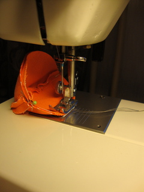
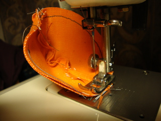
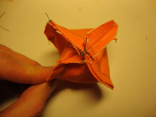
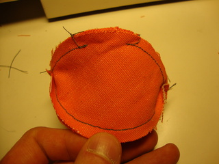
Ompelun jälkeen pallo on nurin ja se pitää kääntää. Tämä kannattaa aloittaa työntämällä toinen saumojen risteyskohta täyttöaukon läpi. Työkaluna voit tarvittaessa käyttää hieman paksumpaa kynää.
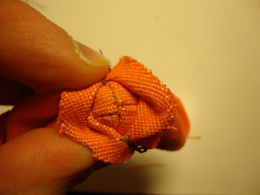 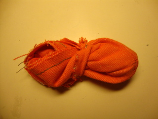 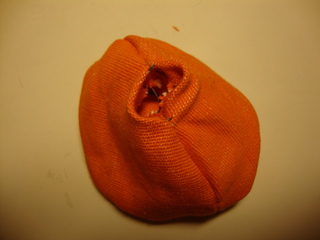
Täytteen valinta on myös hyvin pitkälle mielipidekysymys. Monet kaupasta saatavat siemenet voivat soveltua tehtävään, mutta liian karkeajakoinen materiaali tekee palloista muhkuraisia ja pallot löystyvät, kun aineen osaset murenevat. Pellavansiemenet ovat osoittautuneet hyväksi ja melko halvaksi täytteeksi ja sitä käytän itse. Jos palloja haluaisi pestä täytettynä, pitäisi ne täyttää muovirouheella, mutta sitä voi olla vaikea löytää ja hintakin voi olla melko korkea.
Pallon täyttämiseen erittäin kätevä työkalu on jonkinlainen suppilo. Minulla ei tätä ohjetta tehdessä ollut sellaista, mutta putkenpätkä auttaa myös. Jossakin vaiheessa suppilo ei enää auta, vaan täytettä pitää alkaa ahtaa palloon. Tässä auttaa jälleen hieman paksumpi tussi tai muu kynä. Kaada esim pienellä kannulla pieni määrä siemeniä täyttöaukosta ja paina ne tussilla pallon sisään. Jos et halua palloista kovin tiiviitä, voit lopettaa täyttämisen jo aiemmin ja siirtyä pallon sulkemiseen.
Palloa kannatta puristella ja muokata voimakkaasti täytön aikana, että saumat oikenevat kunnolla ja täyte asettuu hyvin pallon sisällä. Peitä täyttöaukko sormella kun muokkaat palloa.
Kun pallo on mielestäsi riittävän täynnä, paina täyttöaukosta kynällä tai muulla työkalulla täytteitä alaspäin, että saat ompelemiseen tilaa.
Tarvitset neulan ja lankaa. Tähän käy yleensä sama lanka mitä käytit ompelukoneessakin. Langan päähän kannattaa tehdä useampi solmu päällekkäin, ettei se vain tule kankaasta läpi.
Vie neulan pää täyttöaukon reunaan (missä viimeiset ompelukoneen ompeleet ovat) pallon sisäpuolelta ja vedä lankaa, että solmu menee pallon sisäpuolelle. Vie neulan pää toiselta puolelta saumaa pallon sisälle ja tuo se parin millin päästä takaisin ulos.
Lähde etenemään tällä tavalla täyttöaukon yli. Ideana on siis se, että lanka kulkee pallon ulkopuolella mahdollisimman lyhyen matkan ja saumasta tulee mahdollisimman näkymätön ja tasainen.
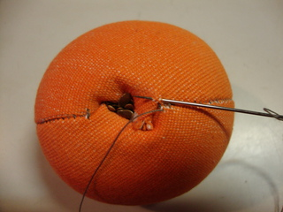 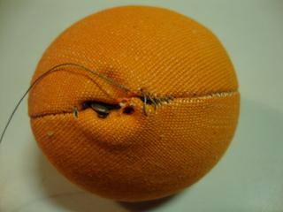 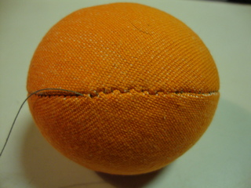
Kun pääset täyttöaukon toiseen reunaan, ompele vielä varmuuden vuoksi yhden kerran yli (ompelukoneen sauman päälle). Tämän jälkeen lanka pitää päätellä, ettei se lähde purkautumaan. Lähde saumaa takaisin päin pistäen neulan pää keskeltä saumaa pallon sisälle ja tuoden sen jonkin matkan päästä (keskeltä saumaa) takaisin ulos. Toista tätä 2-3 kertaa ja tee sitten lankaan solmu mahdollisimman juureen, katkaise lanka ja työnnä solmu saumasta sisään neulan silmäpäällä.
Tällaisia niistä sitten tuli. Pellavansiemenillä täytetyt pallot löystyvät käytössä hieman, mutta eivät merkittävästi. Nämä ovat tähän mennessä isoimmat pallot, jotka olen ommellut: painoa pellavansiemenillä täyteen ahdettuina ~105g ja halkaisijaltaan nuo näyttävät olevan ~6cm. Jos haluat eri kokoisia palloja, kaavan kokoa on helppo muuttaa.
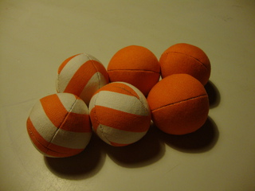 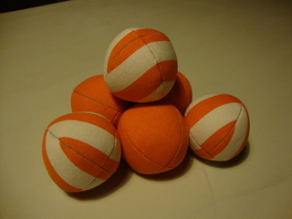 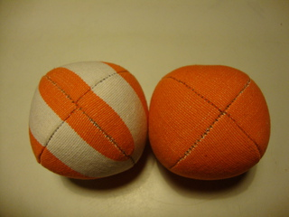{kind=link}
{kind=link}